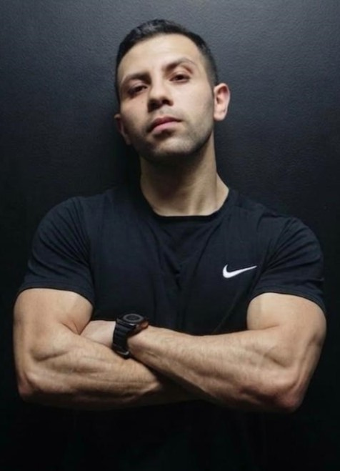

المبادرة الكاملة
برنامج لأجل ولادنا لتصحيح القوام
خطة متكاملة تجمع بين تصحيح منزلي ومتابعة دورية مع Coach Ahmed Maher.
⌄
برنامج لأجل ولادنا لتصحيح القوام
خطة متكاملة تجمع بين تصحيح منزلي ومتابعة دورية مع Coach Ahmed Maher.
وضوح تام
البرنامج ده لمين بالظبط؟
مناسب لطفلكم لو:
- عمره بين 5 و18 سنة.
- لاحظتوا انحناء أو جلوس غلط واضح مرتبط بالموبايل/التابلت/الألعاب.
- مفيش تشخيص طبي بحالة عضوية في العمود الفقري محتاجة تدخل جراحي.
- الأسرة مستعدة تتابع معاه في البيت بخطوات بسيطة وثابتة.
لازم تشوفوا دكتور أولاً لو:
- الطفل متشخّص بانحناء حاد في العمود الفقري (Scoliosis متقدم).
- فيه ألم شديد ومستمر، أو تنميل/ضعف في اليدين أو القدمين.
- حصلت له إصابة أو كسر حديث في الرقبة أو الظهر.
- الأسرة مش متأكدة من طبيعة الحالة تماماً.
ملحوظة مهمة: هذا برنامج إرشادي لتحسين عادات القوام والحركة، وليس بديلاً عن تقييم طبيب مختص
(عظام أو علاج طبيعي أطفال) عند وجود أي حالة طبية أو ألم غير مبرر. في حالة عدم التأكد، دايماً
الأفضل نبدأ بزيارة تقييم طبي أولاً.
هل ده بيوصف حالة طفلكم؟
علامات كتير من الأهالي بيلاحظوها.. ومعظمهم بيأجّلوا التصرف
1الطفل بيقعد على الموبايل أو التابلت أو البلايستيشن ساعات طويلة يومياً، وده حاسين إنه أكتر من اللازم.
2بدأتوا تلاحظوا إنه بينحني وهو قاعد أو واقف، أو كتافه بقت لقدام أكتر من طبيعي.
3اشتكى قبل كده من ألم في الرقبة أو الظهر، رغم إنه لسه صغير في السن.
4حاولتوا تصلحوا له جلسته بالكلام والتنبيه المستمر، بس النتيجة مؤقتة وترجع تاني بعد دقايق.
5قلقانين إن المشكلة تكبر معاه وتأثر على ثقته بنفسه وشكل جسمه وهو بيكبر.
6مش متأكدين من الفرق بين "عادة غلط ممكن تتصحح بسهولة" و"مشكلة فعلية محتاجة تدخل متخصص".
لو أي حاجة من دي بتحصل في بيتكم.. إنتوا مش الوحيدين، وأغلب هذه العلامات ممكن تتحل بخطوات بسيطة لو اكتُشفت بدري.
الصورة المستهدفة
تخيّلوا طفلكم بعد كده يبقى:
✓بيقعد ويقف بشكل سليم من غير ما تفضلوا تصلحوا له كل شوية.
✓واثق من شكله وقامته وسط زمايله في المدرسة.
✓بعيد عن آلام الرقبة والظهر من دلوقتي، مش لما يكبر ويتأخر الحل.
✓اكتسب عادات حركية صحية هتفضل معاه طول عمره، مش حل مؤقت.
✓وإنتوا حاسين بالراحة إنكم تصرفتوا بدري، بدل ما تندموا بعدين على التأجيل.
من انحناء يومي بيتراكم ← لقوام سليم وثقة بتكبر مع طفلكم
إزاي بنشتغل مع طفلكم؟
رحلة "لأجل ولادنا"
1
تقييم قوام مجاني
تبعتوا فيديو قصير أو تمليوا استمارة بسيطة عن وضع طفلكم، وكابتن أحمد يراجعها ويطلعكم بالملاحظات الأولية.
2
خطة تصحيح منزلية مخصصة
لو البرنامج مناسب لحالة طفلكم، بيتحدد له تمارين وتعديلات بسيطة يعملها في البيت، بمتابعتكم كأسرة.
3
متابعة دورية مع Coach Ahmed Maher
مراجعة دورية لتقدم طفلكم (أونلاين)، وتعديل الخطة حسب استجابته.
4
تقييم ختامي ومقارنة قبل / بعد
نقيس التحسن بالفعل، بمقارنة واضحة، مش بمجرد إحساس.
القصة بدأت منين؟
Coach Ahmed Maher

Coach Ahmed Maher
Posture · Health · Future — لأجل ولادنا
شفت أطفال كتير بيقعدوا ساعات طويلة قدام الشاشات من غير ما أهاليهم يحسوا بالتأثير التراكمي على قوامهم، لحد ما تظهر المشكلة واضحة في سن المدرسة أو المراهقة. من هنا بدأت مبادرة "لأجل ولادنا": أساعد الأهالي يكتشفوا المشكلة بدري، ويتعاملوا معاها بخطوات عملية وواضحة، بدل التنبيه المستمر اللي نتيجته مؤقتة.
البرنامج الكامل
برنامج تصحيح قوام لطفلكم — خطة منزلية + متابعة دورية
1000
جنيه مصري
100
درهم إماراتي
30
دولار أمريكي
دفعة واحدة — وصول فوري للخطة بعد تأكيد الدفع
تقييم قوام مجاني (خطوة أولى قبل أي دفع)
خطة تصحيح منزلية مخصصة لعمر الطفل وحالته
متابعة دورية مع Coach Ahmed Maher
تقييم ختامي ومقارنة قبل / بعد
الدفع عن طريق InstaPay
المحفظةahmed.maher.bakri@instapay
التحويل البنكي (محلي بالإمارات أو دولي)
البنكAbu Dhabi Commercial Bank (ADCB)
اسم الحسابAHMED MAHER BAKRY HEFNY ABOUELGHEIT
رقم الحساب14425954810001
IBANAE890030014425954810001
العملةAED
الفرعIBD - Business Bay Branch
Swift CodeADCBAEAA
1حوّلوا المبلغ بالعملة المناسبة عن طريق InstaPay أو التحويل البنكي.
2التقطوا screenshot واضح لإيصال التحويل.
3ابعتوا الإيصال على الواتساب، وهيتم تفعيل خطة الطفل فوراً.